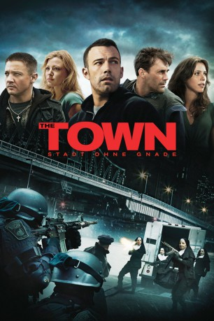

#2491 The Town - Stadt ohne Gnade
Alternativ: The Town
Auszeichnungen: für 1 Oscars nominiert
 
 IMDB-Wertung: 7.6 / 10
IMDB-Wertung: 7.6 / 10  Metascore: 74
Metascore: 74 
Doug MacRay ist, genau wie sein Vater, ein begabter Bankräuber. Gemeinsam mit seinem Kumpel Jem und ein paar Komplizen raubt er scheinbar ungestraft Banken und Geldtransporter aus. Doch als bei einem Coup plötzlich die Bankmanagerin als Geisel genommen wird, bekommt die Sache einen Haken. Doug ist nicht der harte Gangster, der er zu sein scheint. Bei seinen Recherchen bezüglich des Wissens der Geisel verliebt er sich in sie und möchte plötzlich aus dem Geschäft aussteigen. Doch so einfach ist das nicht...
Jahr: 2010
Dauer: 125 Minuten
FSK: 16
Land: USA Studio: Warner Bros.Tonspuren: DD5.1 - ,
Untertitel: Deutsch,
Auflösung: 1080p (1920x800) Größe: 8007 MB
Genre: Thriller, Drama, Krimi
Regisseur:  Ben Affleck
Ben Affleck
Drehbuch: Peter Craig, Ben Affleck, Aaron Stockard, Chuck Hogan
Soundtrack: David Buckley, Harry Gregson-Williams
Darsteller:
 Ben Affleck als Doug MacRay
Ben Affleck als Doug MacRay Rebecca Hall als Claire Keesey
Rebecca Hall als Claire Keesey Jon Hamm als FBI S.A. Adam Frawley
Jon Hamm als FBI S.A. Adam Frawley Jeremy Renner als James Coughlin
Jeremy Renner als James Coughlin Blake Lively als Krista Coughlin
Blake Lively als Krista Coughlin Slaine als Albert 'Gloansy' Magloan
Slaine als Albert 'Gloansy' Magloan Owen Burke als Desmond Elden
Owen Burke als Desmond Elden Titus Welliver als Dino Ciampa
Titus Welliver als Dino Ciampa Pete Postlethwaite als Fergus 'Fergie' Colm
Pete Postlethwaite als Fergus 'Fergie' Colm Chris Cooper als Stephen MacRay
Chris Cooper als Stephen MacRay- Brian Scannell als Henry
 Tony V. als Vericom Crew Chief
Tony V. als Vericom Crew Chief- Michael Yebba als Beacon G.I. Joe Driver
- Mark Berglund als Young Security Guard
- Michael Malvesti als Atlantic Truck Courier
 Ed O'Keefe als Morton Previt
Ed O'Keefe als Morton Previt Gary Galone als Internal Affairs Officer at Fenway
Gary Galone als Internal Affairs Officer at Fenway- Jeremiah Kissel als Claire's Lawyer
- Peter Looney als NA Speaker
- Ted Arcidi als Cedar Junction C.O.
- Alex Winston als Police Photographer
- Chick Bernhardt als Marty McGuire , uncredited
 Stephen Bishop als Derrick , uncredited
Stephen Bishop als Derrick , uncredited David Boston als Man at Casino Cash in Window Line , uncredited
David Boston als Man at Casino Cash in Window Line , uncredited Jeffrey Corazzini als Boston Police Officer , uncredited
Jeffrey Corazzini als Boston Police Officer , uncredited- Alex East als Pedestrian , uncredited
 Keith Fluker als Boston PD , uncredited
Keith Fluker als Boston PD , uncredited Jim Ford als FBI SWAT , uncredited
Jim Ford als FBI SWAT , uncredited John Franchi als Townie , uncredited
John Franchi als Townie , uncredited Victor Garber als Assistant Bank Manager , uncredited
Victor Garber als Assistant Bank Manager , uncredited Suzanne Gillies als FBI Agent , uncredited
Suzanne Gillies als FBI Agent , uncredited London Hall als Runner , uncredited
London Hall als Runner , uncredited- Katie Iacomini als Neighborhood kid , uncredited
- Patrick Languzzi als Thug , uncredited
- Rich Manley als Boston Police , uncredited
 Dan Marshall als Pedestrian Harvard Professor / Graduate Student , uncredited
Dan Marshall als Pedestrian Harvard Professor / Graduate Student , uncredited- Jeff Martineau als Car Driver , uncredited
- Kevin McCormick als Inmate , uncredited
 Thomas McGowan als Crime Scene Investigator , uncredited
Thomas McGowan als Crime Scene Investigator , uncredited- Leigh Nicole als Pedestrian , uncredited
 Americo Presciutti als Policeman , uncredited
Americo Presciutti als Policeman , uncredited Duncan B. Putney als FBI Agent , uncredited
Duncan B. Putney als FBI Agent , uncredited Rich Skinner als Corrections Officer , uncredited
Rich Skinner als Corrections Officer , uncredited- Jason Venezia als Bar Patron , uncredited
 George J. Vezina als FBI Special Task Force Agent , uncredited
George J. Vezina als FBI Special Task Force Agent , uncredited- Billy 'V' Vigeant als FBI Task Force Agent , uncredited
 William Xifaras als Decoy Cop , uncredited
William Xifaras als Decoy Cop , uncredited- Dennis McLaughlin als Rusty
- Corena Chase als Agent Quinlan
- Kerri Dunbar als Henry's Girl
Datei: X:\2010(N-Z)\Town - Stadt ohne Gnade, The (2010, FSK16, 1920x800).mkv seit 13.11.2015
Festplatte: HD 2010(G-Z)-2011(A-F)
 Es gibt insgesamt 115 Filme in der Gruppe '2010(N-Z)'
Es gibt insgesamt 115 Filme in der Gruppe '2010(N-Z)'